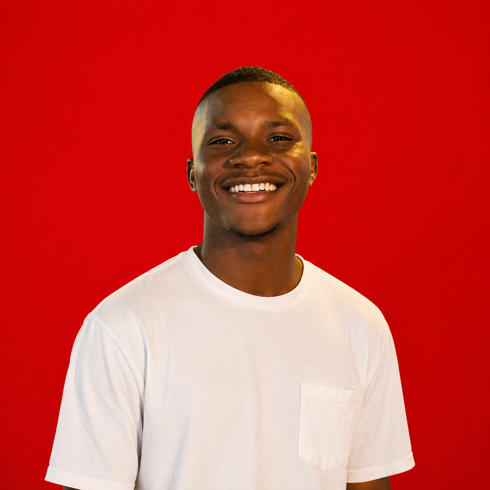

Three people, one clear focus: making automation work for South African SMEs.
Azania is a Co Founder of the company and serves as Chief Financial Officer. She oversees the financial direction of the business, helping ensure responsible financial management, sustainable growth, and strong operational discipline.

Joel is a Co Founder and serves as Chief Executive Officer. He leads the company's overall vision, strategy, business development, and day to day direction, with a focus on building the company and delivering meaningful value to its clients.
Blaine serves as the company's Chief Technical Officer, driving the technical vision and technology strategy of the business. The CTO role focuses on technology development, innovation, systems, automation, and ensuring that the company's digital solutions remain reliable, scalable, and forward looking.